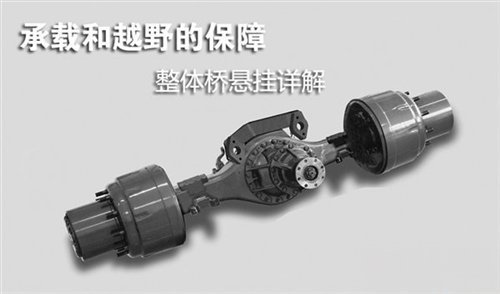

承载和越野的保障 汽车整体桥悬挂详解
这是一种对于大多数消费者越来越陌生的悬挂，当日产途乐、路虎发现等标榜越野的车型都逐渐放弃它之后，只有少数传统的坚守者还在继续采用，这就是我们今天所要提到的悬挂类型——整体桥悬挂。

● 整体桥基本结构
顾名思义，整体桥就是有整体的车桥结构连接两个车轮，车桥不能断开，同一车桥上的两个车轮没有相对运动，这样的一套悬挂结构。整体桥悬挂的历史几乎伴随汽车的诞生就开始了，发展到如今，它的结构并没有太大的变化。对于驱动桥来说，主要还是由差速器壳体、桥管、半轴、轴承等部分组成，而对于非驱动桥的整体桥来说，其结构更为简单，且现在多为货车采用，故下文中不在赘述。
从整体桥半轴的结构类型上，又可以分为半浮式和全浮式半轴两种类型。半浮式半轴直接与轮毂连接，除承受驱动力之外，半轴端部还承受来自轮毂的纵向扭力，其负荷有限，但结构简单，重量轻，因而多用于早期的轿车和轻型货车，现在也不多见，只有牧马人等以攀爬见长的车型还在使用。而全浮式半轴通过法兰、轴承与轮毂连接，半轴只传递驱动力，而不承受扭力，由车桥桥管承受纵向扭力，其应用范围更为广泛，现在的大多数采用整体桥悬挂的乘用车都使用全浮式半轴结构。
北京2020系列的全浮式半轴结构示意图
除开半轴的差异，整体桥悬挂主要的差别还体现在与悬挂搭配的弹性元件上面，较为常见的有钢板弹簧、螺旋弹簧两种类型，此外还有空气弹簧、扭杆弹簧等较为少见的弹性元件类型。钢板弹簧的承载力强，结构简单，维护起来也很容易，缺点是轮胎运动轨迹受限，公路性能和舒适性一般。而螺旋弹簧能提供更大的轮胎自由行程，同时需要多条连杆进行辅助连接，结构较为复杂，此外维修起来也相对繁琐一些。
悍马H3的后悬采用钢板弹簧
螺旋弹簧的行程更大，利于极限的越野情况，但需要多条连杆连接车桥和车体
另外，整体桥悬挂并不意味着半轴直接和车轮中心相连，因为出于提升车辆离地间隙的目的，很多越野车采用了门式车桥的结构，半轴轴端会高于车轮中心，半轴通过安装在车桥两端的齿轮组驱动车轮，这种车桥结构更为复杂，多用于强调极限越野环境下使用的车型。
奔驰乌尼莫克所用的门式车桥及其结构示意图
● 整体桥悬挂的优势与不足之处
◆ 承载力强
由于有桥管负担部分或者全部垂直方向的载荷，因此整体桥悬挂的承载能力确实非常出众，就拿消费者比较熟悉的长城哈弗来说，它的最大承载质量达到了629公斤，大大超出一般轿车400公斤上下的承载质量。而大多采用钢板弹簧加整体桥悬挂的皮卡的装载能力更是惊人，在国内的汽车产品目录已经划到了轻型卡车的行列。
长城哈弗H3及其使用的整体桥后悬，弹性元件为螺旋弹簧
◆ 适合越野及恶劣环境下使用
由于结构相对简单，能承受更大扭力，同时采用螺旋弹簧的整体桥悬挂具备比一般悬挂大得多的行程，在崎岖环境下可以让四轮更好地获得抓地力，因此那些延续了越野血统的车型大多依然采用后整体桥或者前后整体桥的结构，比如奔驰G系列、路虎卫士、吉普牧马人、丰田FJ酷路泽等车型都是采用整体桥悬挂的典型。
采用前后整体桥的牧马人可以应付崎岖的岩石路面
路虎家族的越野最强者卫士采用了前后整体桥的结构
铃木吉姆尼也采用了前后整体桥的悬挂，这款小车也成为很多越野爱好者的最爱
◆ 利于维护和改装
同样，由于结构简单，半轴等部位均在封闭桥管中运行，所以整体桥结构易于日常的维护和针对性的改装，不管你是日常使用，还是越野发烧友，在整体桥上“动手术”都会简单不少。比如在越野领域非常看重的差速器锁改装方面，如果差速器改装前后齿数相同，只需要更换差速器即可，而不必更换其他部件，同时也不会影响悬挂其他部件的设定，相比多连杆等类型的悬挂而言，整体桥的改装要容易很多。
美版海拉克斯在缩短的DANA 60前桥上采用的ARB气动差速器锁
整体桥悬挂进行升高改装也很方便，图为卫士改装的可调行程套件
◆ 公路性能一般
不过整体桥悬挂也有它自己的固有缺点，那就是在公路行驶时，单侧车轮的弹跳会直接影响到同一轴上的另外一侧车轮，这造成了整体桥悬挂的高速性能和舒适性都比较一般。因此，现在一些原先采用整体桥悬挂的中高端SUV车型已经开始逐步放弃整体桥这种悬挂类型，而改用循迹性和舒适度都更好的多连杆或者其他悬挂类型。
路虎发现4已经放弃了整体桥后悬，而采用了多连杆悬挂
编者语：出于向舒适性和公路性能的妥协，现在采用整体桥悬挂的车型已经比较不多，但是这并不能抹杀它的实用性和在越野爱好者心目中的地位，由于整体桥悬挂结构简单，便于维护和改装，因此那些强调承载和越野的车型还会继续沿用这种悬挂。